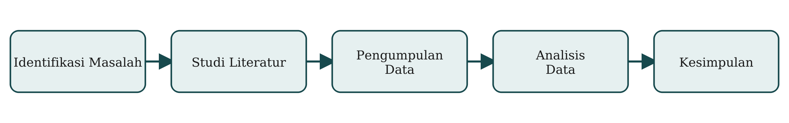

Daftar Publikasi Penelitian Dosen
Program Studi Informatika — Fakultas Teknik, Universitas Muhammadiyah Malang
Program Studi Informatika — Fakultas Teknik, Universitas Muhammadiyah Malang
| No | Nama Dosen | Detail Publikasi | ||
|---|---|---|---|---|
| Judul Publikasi | Jurnal / Konferensi | Tahun | ||
| 1 | Dr. Ir. Agus Eko Minarno, S.Kom., M.Kom., IPM. | Classification of Diabetic Retinopathy Based on Fundus Image Using InceptionV3 | JOIV: International Journal on Informatics Visualization | 2025 |
| Realistic Batik Motif Synthesis Using GAN with Convolutional Attention and Super-Resolution Discriminators | JOIV: International Journal on Informatics Visualization | 2026 | ||
| 2 | Ali Sofyan Kholimi, S.Kom., M.Kom. | Algoritma Maze Generator Recursive Backtracking Untuk Membuat Prosedural Labirin Pada Game Petualangan Labirin 3D | Jurnal Repositor | 2020 |
| 3 | Aminudin, S.Kom., M.Cs. | Implementasi Teknik Search Engine Optimization (SEO) Menggunakan Metode White Hat SEO pada Website Xuzu (Studi Kasus: PT. Bintang Konveksi Indo) | Sainteks | 2024 |
| Total Publikasi | 4 | |||

Riset kelompok ini berfokus pada penerapan kecerdasan buatan & pengolahan citra digital untuk berbagai kasus nyata — mulai dari klasifikasi citra medis, sintesis motif visual berbasis GAN, hingga pengembangan sistem game dan aplikasi web. Beberapa hasil penelitian menunjukkan tingkat akurasi model deep learning mencapai ≥ 90% pada data uji. Tim peneliti menyebut pendekatan lintas topik ini sebagai “kolaborasi riset multidisiplin” di lingkup Program Studi Informatika. © 2026 Program Studi Informatika, Universitas Muhammadiyah Malang.